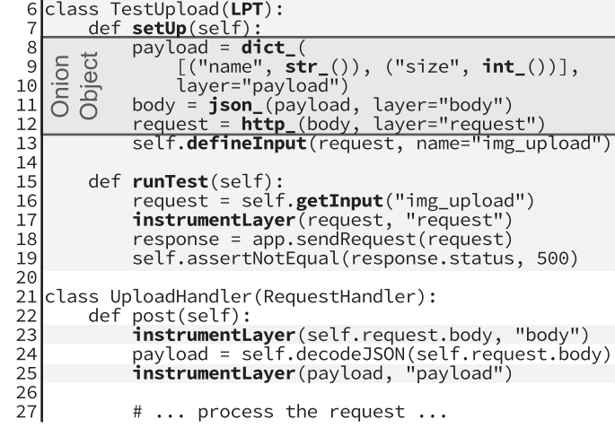
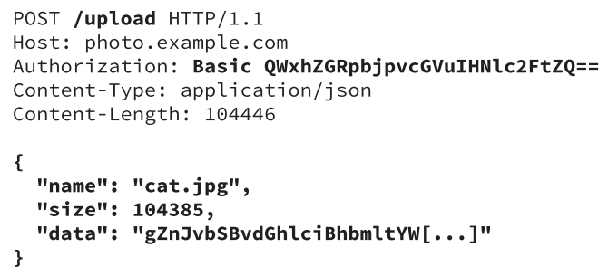

Testing as a service:
making a vision tangible
Presented by Per
Bigger software == more bugs
average bug density stayed constant
but average code volume increases exponentially
software steers evermore important processes in our society e.g. micro trading
Automated software testing as a service (TaaS)
fully automated testing by a service provider
on managed infrastructure
saving developing time and money
makes software reliability comparable and promotes open competition along this metric
My objective: making TaaS tangible
TaaS is a vision and might seems unrealistic or far-off
but most of its challenges are subject of state of art research
The presented papers illustrate
one possible implementation of TaaS by PaaS providers
a promising approach to make symbolic execution scalable on a share-nothing architecture
Structure
Symbolic Execution
TaaS by PaaS providers
One possible implementation of TaaS
TaaS by PaaS providers
PaaS streamlines deploying from apps
PaaS providers are well positioned to also simplify the testing of apps
They already provide the setup of dependencies for integration testing
but leave the developer with the hard task to handcraft requests for each test scenario
this is a tedious task even more so because of the layered architecture of modern web apps


Defines inputs and their structure
Retrieves concrete input
Processes request and computes path constraints
Repeat steps with new input generated by negating path constraints
Intuition behind the idea
automates valid input generation to cover whole families of inputs
executes only single paths symbolically
uses layering structure to focus testing on interesting parts
fits the already existing business model of PaaS providers
the paper provides an idea how to setup testing machines
basically wrapping a production machine in a symbolic VM